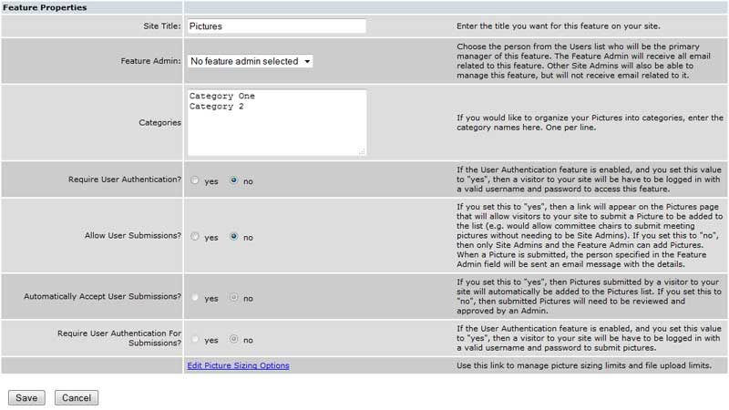
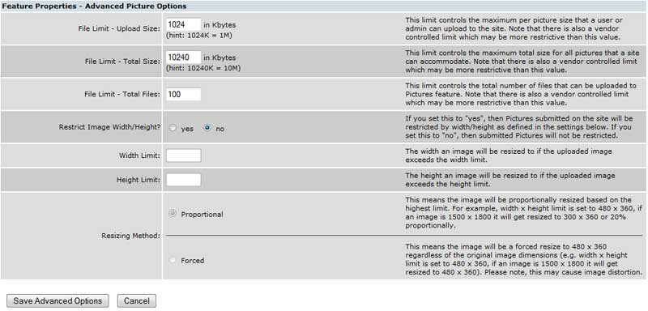

Working with Images: {{imgpanel.msg}}
All of the images you will use on your site are stored in one location, the picture folder. Images must be uploaded from a local PC to the picture folder before they are available for use on the site. Images can be uploaded by the system administrator, a feature administrator, or site visitors – depending on how you configure the feature.
Images can be photos, graphics, or clip art and may be uploaded in .JPG, .PNG, or .GIF formats.
Like other Features, you can create a button or embedded text link that goes to the Pictures folder. This is useful if you want page or feature administrators to have access to the picture folder.
Images can be photos, graphics, or clip art and may be uploaded in .JPG, .PNG, or .GIF formats.
Like other Features, you can create a button or embedded text link that goes to the Pictures folder. This is useful if you want page or feature administrators to have access to the picture folder.
To set up the options for your images, select the Features tab in the main menu, then “edit” next to “Pictures” on the feature menu. You will see a screen similar to this

Site Title: If you prefer to name Pictures something other than the default “Pictures” you can change the name here. This is the title that will be displayed when the feature is accessed by someone uploading an image.
Feature Admin: Selecting a feature administrator from the drop list of your available feature administrators allows you to share the image maintenance duties with someone else. Use the drop-down menu to display a list of feature administrators (Their user records are marked as Feature Administrators).
Categories: You can create categories to organize and sort your uploaded images. This works just like with the document feature- just type your category titles into the text box (one per line) and save when you're ready. Those categories will then be available when uploading/editing images in the 'manage' tab. This organization is very useful if you end up with a large number of images on your site
Require User Authentication: If you want only logged in users to be able to view the picture lists, select “yes.” Otherwise, select “no.”
Allow User Submissions: If you would like your site visitors to be able to submit their own images, select “yes.” Otherwise, select “no.” You must have a feature administrator for this option to work correctly. Once set up, a “submit” button will appear on user screens with the authority to upload images and “manage” button will appear of user screens with the authority to manage (approve, delete, etc.) images. If you want to allow users to upload their own images, we suggest that you set up the “Sizing” options discussed in the Sizing tag at left.
Automatically Accept User Submissions: Assuming you allow submissions (above), you can control whether those submissions are automatically added to the picture folder (“yes”) or require review and approval before appearing in the folder (“no”). If you select no, an email will be sent to the feature administrator when a photo has been uploaded notifying them of the need to approve it.
Require User Authentication for Submissions: If you have enabled “user submissions” and want only logged in users to be able to submit images, select “yes.” Otherwise, select “no.”
Note: If you've subscribed to our extended package and have access to the User Groups feature, you will be able to assign certain user groups access to manage this feature
Feature Admin: Selecting a feature administrator from the drop list of your available feature administrators allows you to share the image maintenance duties with someone else. Use the drop-down menu to display a list of feature administrators (Their user records are marked as Feature Administrators).
Categories: You can create categories to organize and sort your uploaded images. This works just like with the document feature- just type your category titles into the text box (one per line) and save when you're ready. Those categories will then be available when uploading/editing images in the 'manage' tab. This organization is very useful if you end up with a large number of images on your site
Require User Authentication: If you want only logged in users to be able to view the picture lists, select “yes.” Otherwise, select “no.”
Allow User Submissions: If you would like your site visitors to be able to submit their own images, select “yes.” Otherwise, select “no.” You must have a feature administrator for this option to work correctly. Once set up, a “submit” button will appear on user screens with the authority to upload images and “manage” button will appear of user screens with the authority to manage (approve, delete, etc.) images. If you want to allow users to upload their own images, we suggest that you set up the “Sizing” options discussed in the Sizing tag at left.
Automatically Accept User Submissions: Assuming you allow submissions (above), you can control whether those submissions are automatically added to the picture folder (“yes”) or require review and approval before appearing in the folder (“no”). If you select no, an email will be sent to the feature administrator when a photo has been uploaded notifying them of the need to approve it.
Require User Authentication for Submissions: If you have enabled “user submissions” and want only logged in users to be able to submit images, select “yes.” Otherwise, select “no.”
Note: If you've subscribed to our extended package and have access to the User Groups feature, you will be able to assign certain user groups access to manage this feature
If you are going to allow feature administrators or members to upload (submit) Images, we strongly recommend that you set up automatic sizing. To do that, select the “Edit Picture Sizing Options” link at the bottom of your pictures Edit screen. When you do you will see a screen similar to the one show below:

Note: Limits you establish here also apply to Photo Albums.
File Limit – Upload Size: This field is used to establish an upper limit to the maximum size an image can be to be an acceptable upload. Image file size determines how long it takes to display the image on a page. Smaller is better.
File Limit – Total Size: This field is used to establish how much of your total site disk space allocation you wish to make available to images. If you don’t know what your total disk space allocation is, please check with your support representative. Generally, 50% of the total allocation is a good rule of thumb for image space allocation.
File Limit – Total Files: This field is used to establish an upper limit on the total number of image files that can be uploaded. If the images on your site are generally small (under 150kb in file size), you can set this limit fairly large (300-500).
Restrict Image Width/Height? This is a very important option especially if you allow others to upload images. It provides a way for you to control the file and display size of uploaded images automatically. It works in conjunction with the three options below.
File Limit – Upload Size: This field is used to establish an upper limit to the maximum size an image can be to be an acceptable upload. Image file size determines how long it takes to display the image on a page. Smaller is better.
File Limit – Total Size: This field is used to establish how much of your total site disk space allocation you wish to make available to images. If you don’t know what your total disk space allocation is, please check with your support representative. Generally, 50% of the total allocation is a good rule of thumb for image space allocation.
File Limit – Total Files: This field is used to establish an upper limit on the total number of image files that can be uploaded. If the images on your site are generally small (under 150kb in file size), you can set this limit fairly large (300-500).
Restrict Image Width/Height? This is a very important option especially if you allow others to upload images. It provides a way for you to control the file and display size of uploaded images automatically. It works in conjunction with the three options below.
- Width Limit: This field allows you to establish an upper limit to the width of an uploaded image. As a general rule, images should be 400 pixels wide or less.
- Height Limit: This field allows you to establish an upper limit to the height of an uploaded image. As a general rule, images should be 400 pixels high or less.
- Resizing Method: Images can be forced to a specific size, which can cause distortion, or resized proportionally. When you select the “proportional” option, the image will be resized to the lower of the Width or Height limit. As an example, if you set the Width Limit field to 250, an image that is 2592 pixels x 1728 pixels, would be resized to 250 x 176 – the upper limit on the height controlling the resizing in the proportional option but the image proportions being maintained. The same photo would be resized to 250 X 250 if you selected the forced option. We recommend using the Proportional option.
When you want to upload a new picture for use on your site, click the features tab in your main admin menu, then select "Manage" for the Pictures feature. This will show you the list of all pictures uploaded to your site:
At the top there will be a picture approval area. If you've configured your pictures section to allow user submissions and do not automatically accept those submissions, the pictures submitted by users will appear here for your approval. You can either approve them or delete them. If you approve them, they will appear in the master picture list on the same screen and be usable on your site.
File name - Use “Browse” to locate the picture on your local PC that you want to upload. The “size limit” display just below the File name is taken from your definition on the resizing option screen (see the 'resizing' tag at left).
Category – Choose the category from the drop down list. This list is generated from the categories you enter in the 'edit' tab for the mailing list feature.
Approval - The specific “Approval” message depends on your approval process definition on the “edit” screen. The text above is displayed because the option to require approval is set on the “edit” screen.
Copyright Text – If you are concerned about the copyright on the image, you can enter text in this area which will be displayed at the top of the image.
Uploading an image can take some time, so be patient. The upload time depends on the size of your file and the speed of your connection. You are notified that the upload was successful. Once the image or images are uploaded, they are available for use on your site as images on a web page or pictures in an album.
Uploading Pictures
Uploading can be accomplished on the picture “manage” screen by selecting the “Upload a new picture file” link, located at the top and bottom of the picture list. This is also the dialog a user will see when the “allow user submissions” option has been set up on the “edit” screen and they select “submit.”
Comments - We recommend that you enter the name of the page, album, or subject. Since you can click on the “comments” links on the Pictures folder window, being able to group them by page, by album, by subject, etc. will make finding and identifying them a lot easier.File name - Use “Browse” to locate the picture on your local PC that you want to upload. The “size limit” display just below the File name is taken from your definition on the resizing option screen (see the 'resizing' tag at left).
Category – Choose the category from the drop down list. This list is generated from the categories you enter in the 'edit' tab for the mailing list feature.
Approval - The specific “Approval” message depends on your approval process definition on the “edit” screen. The text above is displayed because the option to require approval is set on the “edit” screen.
Copyright Text – If you are concerned about the copyright on the image, you can enter text in this area which will be displayed at the top of the image.
Uploading an image can take some time, so be patient. The upload time depends on the size of your file and the speed of your connection. You are notified that the upload was successful. Once the image or images are uploaded, they are available for use on your site as images on a web page or pictures in an album.
For images displayed on your site, you can change the image without having to delete the old one, upload a new one, and re-link it to the page area. The “Replace” function does all of that for you in one operation.
Please Note: This process works best if the new image has the same filename as the old image, so try to make sure those match up before using the replace option. If they have different file names, when you replace an image, you may have to go to the page area where that image is displayed and re-insert it.
Replacing Images
To replace an image, select the “Replace” link next to the “old” image in the picture folder, browse to the “new” image on your local PC, and “Upload” it. That’s all there is to it!Please Note: This process works best if the new image has the same filename as the old image, so try to make sure those match up before using the replace option. If they have different file names, when you replace an image, you may have to go to the page area where that image is displayed and re-insert it.
Deleting Images
Over time, you will have uploaded many images that fall into disuse. It is a good practice to periodically clean up the picture folder. If you intend to use an image again, by all means leave it in the picture folder, but if you no longer need it, delete it. To delete an image, select the “Delete” link next to the no-longer-needed image and confirm. To delete multiple images at once, check the 'delete file?' box for the row(s) you want to delete and click the 'delete selected files' button at the top or bottom of the screen.
Even an old 3 Mega-Pixel camera creates pictures that are about 500 KB – generally too big to put on your web site and have them load quickly and effectively. The higher the Mega-Pixel rating of your camera, the larger the file it will produce.
The picture feature has an option that will help. You can, and probably should, activate the “Restrict Image Width/Height?” option, especially if you allow others to upload images. It provides a way for you to control the file and display size of uploaded images automatically. Click the 'Sizing' tag at left for more information on the resizing option.
If you are not using the “Restrict Image Width/Height,” images should always be resized manually before uploading to your site. The smaller the picture the faster it will load. Ideally, your resized photos should be 200kb or smaller. If your images are still to slow to load, even after resizing, you may need an image editing program (e.g. Photoshop, Photo Studio, Paint Shop, MS Picture It) to restrict the pixel density and size – the specific steps involved with each of these is beyond the scope of this guide. Using a photo editor has the advantage of being able to adjust the color and contrast as well as cropping the picture.
You do not have to invest a lot of money is photo editing software. There are many excellent packages available at very reasonable purchase amounts – and some of them are free.
Your customer support manager can also assist with resizing photos- contact custcare-director@nordenterprises.com for help.
The picture feature has an option that will help. You can, and probably should, activate the “Restrict Image Width/Height?” option, especially if you allow others to upload images. It provides a way for you to control the file and display size of uploaded images automatically. Click the 'Sizing' tag at left for more information on the resizing option.
If you are not using the “Restrict Image Width/Height,” images should always be resized manually before uploading to your site. The smaller the picture the faster it will load. Ideally, your resized photos should be 200kb or smaller. If your images are still to slow to load, even after resizing, you may need an image editing program (e.g. Photoshop, Photo Studio, Paint Shop, MS Picture It) to restrict the pixel density and size – the specific steps involved with each of these is beyond the scope of this guide. Using a photo editor has the advantage of being able to adjust the color and contrast as well as cropping the picture.
You do not have to invest a lot of money is photo editing software. There are many excellent packages available at very reasonable purchase amounts – and some of them are free.
Your customer support manager can also assist with resizing photos- contact custcare-director@nordenterprises.com for help.